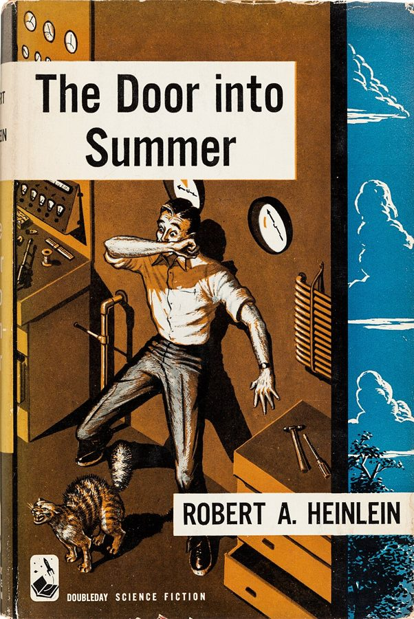

盛夏之门 · 英文伴读
The Door into Summer — Robert A. Heinlein, 1957
陪你读英文原版。这里没有译文，也不替你读书：每章一页，读前给你人物、场景地图、背景和图，读的时候查生词短语，读后用几道题确认你读懂了。不剧透：每一页都不提这一章之后的事。

怎么用
1. 先看页面的读前部分（人物、场景地图、背景、书里的世界），两三分钟，知道要去哪里、会碰到谁。
2. 读原书这一章。卡住了再来查「词与短语」，词条按场景分组、按书里出现的顺序排。章长的话按场景读，读完一个打个勾。
3. 读完展开读后部分：句子讲解、理解检查。然后标记读完。
全书十二章，六万八千词左右。这本书难在 1950 年代的美国口语、工程师的比方，以及生意和法律的行话，目录里每章都标了。第一次来先看「开读之前」。
听书的话：长的几章拆成了几页（2a、2b…），每页大约是一次听完的量。页头的「听书」提示告诉你这一页在这一章录音里从哪句听起、听到哪句停。
目录
每页的一句开场提示，要等前一页标记读完才显示（它会带出前一页的结局）。
书里的点子，后来怎样了
扫地机器人、家务机器人、电脑绘图、冷眠……1956 年的设想，对照真实的 2000 年和今天。每一条要等你读到它出场的那一页才揭开，不剧透。
我的故事线
每标记读完一章，这里揭开一行：这一章在什么时候、什么地方，发生了什么。隔了几天再读，从这里接上。